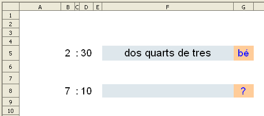

Presentació gràfica de l'activitat.

Funcions que es fan servir en aquesta activitat
Objectiu de l'activitat
Escriure les hores amb lletra.
Desenvolupament de l'activitat
1. Obrir el fitxer M6 i canviar el nom de Full3 pel de M6P2 suport hora.
2. Escriure a les cel·les del rang B7:F18 d'aquest nou full, el següent:
Llista de les hores.
Aquest full servirà de suport per poder fer l'activitat en un nou full anomenat M6P2 les hores.
3. Inserir un nou full amb el nom de
M6P2 les hores
El que ve a continuació s'escriu al full M6P2 suport hora
4. Escriure a la cel·la
A1:
='M6P2 les hores'.A1
El valor d'aquesta cel·la A1 fa referència a la cel·la A1 del full M6P2 les hores.
5. Escriure a la cel·la
C6:
=SI(A1=0;ALEATENTRE(1;12))
Amb aquesta fórmula s'obté un número aleatori entre 1 i 12 que representarà l'hora.
6. Escriure a la cel·la
D6 els dos punts de l'hora (:)
7. Escriure a la cel·la
E6:
=CONSULTA(SI('M6P2 les hores'.A1=0;ALEATENTRE(1;12));C7:C18;E7:E18)
Amb aquesta fórmula es fa una consulta aleatòria del minuts E7:E18 si 'M6P2A hora'.A1 és igual a 0.El criteri de cerca d'aquest consulta és ALEATENTRE(1;12) fent referència al Vector de cerca
C7:C18 per a finalment donar una resultat (result_vector) en la corresponent cel·la del rang E7:E18.
Havent obtés el número corresponent a l'hora (
C6) i el número corresponent als minuts (
E6), caldrà fer el següent:
8. Escriure a la cel·la
D1:
=SI(E6<=10;CONSULTA(C6;C7:C18;B7:B18)&" "&CONSULTA(E6;E7:E9;F7:F9);"")
Amb aquesta fórmula s'escriu l'hora i els minuts si el valor de la cel·la E6 és menor o igual que 10.Observar que en la segona consulta el vector de cerca de la segona consulta només fa referència al rang E7:E9que són justament els valor menors o igual a 10.
9. Escriure a la cel·la
D2:
=SI(I(E6>=15;E6<30);CONSULTA(E6;E10:E13;F10:F13)&" "&CONSULTA(C6+1;C7:C19;D7:D19);"")
Aquesta fórmula segueix un procediment semblant a la fórmula anterior però amb la condició de que
la cel·la E6 sigui major o igual a 15 i que la cel·la E6 sigui menor que 30. Observar que el criteri de cerca de la segona consulta és C6+1. D'aquesta manera s'augmenta en una unitat l'aleatori i així, per exemple, les 6:20 hores es pot interpretar com un quart i cinc de set (C6=6+1=7).
10. Escriure a la cel·la
D3:
=SI(I(E6>=30;E6<45);CONSULTA(E6;E13:E15;F13:F15)&" "&CONSULTA(C6+1;C7:C19;D7:D19);"")
Aquesta fórmula és pràcticament una copia de l'anterior on només canvien els valors de la cel·la E6 i dels vectors de cerca i de resul_vector.
11. Escriure a la cel·la
D4:
=SI(E6>=45;CONSULTA(E6;E16:E18;F16:F18)&" "&CONSULTA(C6+1;C7:C19;D7:D19);"")
En aquesta fórmula la condició és que el valor de la cel·la E6 sigui major o igual que 45.
12. Escriure a la cel·la
D5:
=D1&D2&D3&D4
Aquesta fórmula concatena les cel·les del rang D1:D4 obtenint l'hora amb lletra.
Amb els passos 9, 10, 11 i 12 és una manera de fer l'exercici. Una altra manera de fer el mateix, sene haver d'escriure aquests passos, seria escrivin a cel·la D5 el següent:
=SI(E6<=10;CONSULTA(C6;C7:C18;B7:B18)&" "&CONSULTA(E6;E7:E18;F7:F18);CONSULTA(E6;E7:E18;F7:F18)&" "&CONSULTA(C6+1;C7:C18;D7:D18))
El que ve a continuació s'escriu al full M6P2 les hores
13. Formatar les cel·les del rang
F5:G8 com es veu en el gràfic de la presentació de l'activitat.
14. Escriure a la ce·la
B5:
='M6P2 suport hora'.C6
15. Fer una copia de la cel·la
B5 i enganxar-ho a les cel·les
C5 i
D5
16. Escriure a la cel·la
G5:
=SI(F5="";"";SI(F5='M6P2 suport hora'.D5;"bé";"no"))
17. Fer una macro amb les següent funcions:
Esborrar el valor de la cel·la F5
Assignar a la cel·la A1 el valor de 0
Que la cel·la F5 rebi el focus.
18. Crear un botó de prémer de Controls de formulari i assignar-li la macro feta anteriorment.
19. Validar la cel·la A1 per al valor 0.
20. Protegir les cel·les que convingui.
21. Ocultar o fer no visible les cel·les que convingui.
22. Comprovar que l'activitat funcioni correctament.
23. Desar el fitxer M6
A vegades les hores es diuen de diferent manera segons el lloc on es viu. Per exemple,
dos quarts de dues per
la una i mitja. Sent així, convindria fer un exemple d'escriure una determinada hora per donar referència de quina manera s'espera que s'escrigui l'hora.
També convindria fer un exemple per donar referència de quina manera s'escriu l'hora en quant a:
Aquests detalls són importants perquè es podria donar el cas d'escriure bé l'hora i la cel·la avaluadora no ho donés per bo.
Presentació gràfica de l'activitat
Funcions que es fan servir en aquesta activitat
Objectiu de l'activitat
Fer una senzilla comptabilitat domèstica.
Desenvolupament de l'activitat
1. Obrir el el fitxer M6 i afegir un nou full anomenat M6P2 comptabilitat.
2. Escriure a les cel·les del rang B2:E21 el que es veu en les del cel·les del rang B2:E21 del gràfic de la presentació de l'activitat.
Llista comptabilitat
3. Fer que el rang B2:F21 tingui un format (atributs de la cel·la) semblant al gràfic de la presentació de l'activitat.
4. Escriure a la cel·la F4: =D2+D4-E4 (es suma el saldo inicial més l'ingrés de la nòmina1 menys la despesa de la cel·la E4)
5. Escriure a la cel·la F5: =SI(I(D5="";E5="");"";F4+D5-E5) (si les cel·les D5 i E5 no contenen res, llavors la cel·la F5 no mostra res; si no, es suma el valor de la cel·la F4 més el valor de la cel·la D5 menys el valor de la cel·la E5)
6. Copiar el contingut de la cel·la F5 a les cel·les del rang F6:F21
7. Seleccionar les cel·les del rang B3:F21 i anar a Dades | Filtre| i clic en Filtre automàtic.
És probable que en fer el pas 7 es mostri el següent missatge: “L'interval no conté les capçaleres de les columnes. Voleu utilitzar la primera línia com a capçalera de la columna?” Llavors fer clic en Si
8. Comprovar que funcionin bé els filtres fent un filtre de la paraula
alimentació de la columna que té per capçalera la paraula
concepte (
cel·la C3). Havent fet el filtre, només s'haurien de mostrar quatre files fent referència a la paraula
alimentació.
9. Escriure a les cel·les del rang
H4:H9 el que hi ha escrit al gràfic de presentació de l'activitat.
10. Escriure a la cel·la
I4:
=SUMA(D4:D21)
11. Escriure a la cel·la
I5:
=SUMA(E4:E21)
12. Escriure a la cel·la
I6:
=I4-I5+D2
Per saber la despesa acumulada per concepte, primer caldrà fer una selecció d'aquelles cel·les del rang C4:C21 que cotinguin el valor de la cel·la H9. Es per això, que a la cel·la J4 s'escriu =SI(C4=$H$9;E4;""). És a dir, si el valor la cel·la C4 és igual al valor de la cel·la H9, llavors es mostra el valor de la cel·la E4; si no, no es mostra res.
13. Escriure a la cel
J4:
=SI(C4=$H$9;E4;"")
14. Copiar la cel·la
J4 i enganxar-la a les cel·les del rang
J5:J21.
Ara només cal sumar les cel·les del rang J5:J21 per saber la despesa acumulada en funció del que hi ha escrit a la cel·la H9.
15. Escriure a la cel·la
I9:
=SUMA(J4:J21)
16. Protegir les cel·les que convingui.
17. Ocultar les cel·les que convingui.
18. Comprovar que funcioni correctament l'activitat.
19. Desar el fitxer
M6.